A PPO agent that is excellent under the bandwidth distribution it was trained on collapses once that distribution shifts — and more training does not bring it back.
The failure is traced to plasticity loss. But the standard dormant-neuron metric watches only forward activations: we prove its forward–backward equivalence holds only at exactly zero, and breaks under the practical $\epsilon$-threshold.
A Silent Neuron is inactive in both forward output and loss-independent backward gradient. Resetting exactly these units restores plasticity, and provably tightens the tracking bound from the full dimension $d$ to the silent-subspace average $\frac{1}{T}\sum_t d_{s,t}$.
Adaptive video streaming optimizes Quality of Experience (QoE) metrics by selecting appropriate bitrates according to varying network bandwidth and user demands. In practice, however, real-world network bandwidth often exhibits heterogeneity relative to training environments. Current methods predominantly tackle this problem through learning-based approaches designed to improve generalization performance. Our systematic investigation reveals a critical limitation: neural networks suffer from plasticity loss, significantly impeding their ability to adapt to heterogeneous network conditions.
Through theoretical analysis of neural propagation mechanisms, we demonstrate that existing dormant neuron metrics inadequately characterize neural plasticity loss. To address this limitation, we have developed the Silent Neuron theory, which provides a more comprehensive framework for understanding plasticity degradation. Based on these theoretical insights, we propose the Reset Silent Neuron (ReSiN), which preserves neural plasticity through strategic neuron resets guided by both forward and backward propagation states. Moreover, we establish a tighter performance bound for ReSiN under non-stationary network conditions.
In our implementation of an adaptive video streaming system, ReSiN shows substantial gains under non-stationary conditions in which the available bandwidth alternates between high and low regimes, improving the QoE by 178%, and it remains beneficial under stationary real-world traces, where it improves the QoE by 1.6%.
§1 · Motivation
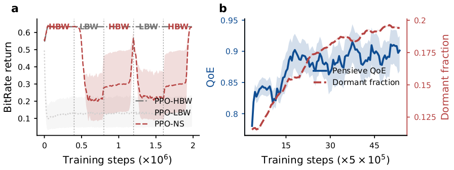
A PPO agent that excels under stationary bandwidth collapses when the bandwidth distribution shifts.
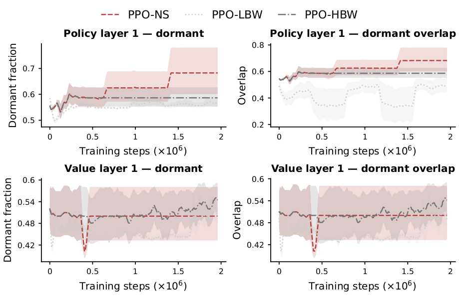
The culprit: plasticity loss. Dormant units accumulate and persist as training progresses.
Our analysis shows that the standard dormant neuron criterion — which looks only at forward activations — misses an entire class of units that stop learning: neurons whose gradients vanish even though their outputs do not, and conversely, neurons whose small outputs still carry live gradients. The Silent Neuron theory characterizes plasticity loss through the intersection of forward silence and backward silence, and ReSiN resets exactly those units, avoiding both under- and over-resetting.
§2 · Theory
Consider a feed-forward layer $l$ whose $i$-th neuron outputs $h_{l,i}(\mathbf{x})=\sigma_l(\mathbf{w}_{l,i}^{\top}\mathbf{x}+b_{l,i})$ on inputs $\mathbf{x}$ drawn from a distribution $D$. The classical plasticity-loss literature declares a neuron dormant by its relative forward activity:
Three mild regularity conditions — each of which is not an idealization but a property of the ABR system itself — are all the theory needs:
Forward Dormancy Lemma. $s_{l,i}=0$ forces $\mathbb{E}|h_{l,i}|=0$ (non-degenerate denominator), so $h_{l,i}=0$ almost everywhere on $D$; continuity upgrades this to everywhere on $D$.
Forward-to-Backward Lemma. If $h_{l,i}\equiv 0$ on $D$, the Mean Value Theorem applied along any admissible perturbation direction forces $\nabla h_{l,i}(\mathbf{x})=0$ on all of $D$ — a nonzero gradient at any point would produce a nonzero inner product $\epsilon\|\nabla h_{l,i}\|^2$, a contradiction.
Backward Dormancy Lemma. Conversely, a vanishing gradient on a connected domain makes $h_{l,i}$ constant; a single zero value pins that constant to $0$, giving $s_{l,i}=0$. Full proofs in the paper's appendix.
The catch — and the motivation for Silent Neurons.
Theorem 1 says statistical dormancy and functional silence coincide, but only at exactly zero. In practice dormancy is detected by a threshold $s_{l,i}<\epsilon$, the conclusion depends on the input distribution $D$, and condition (B) holds on $D$ rather than the whole input space. Crucially, relaxing $s_{l,i}=0$ to $s_{l,i}<\epsilon$ no longer guarantees any gradient property: a “dormant” neuron may still be learning, and a learning neuron may look dormant. Resetting on forward evidence alone therefore both over- and under-shoots.
ReSiN examines the backward pass directly, through the loss-independent gradient $g_{\mathbf{w}}=\nabla_{\mathbf{w}}\sum_{n} f_{\mathbf{w}}(x_n)$, i.e., the network's sensitivity of its own outputs to its parameters, aggregated over a batch. Compared to PPO's loss gradient this (i) avoids the masking effect where a zero loss gradient hides an active neuron, (ii) reflects contributions across the full decision space instead of the current optimization objective, and (iii) detects neurons that matter for particular state representations even when the current loss ignores them.
This is the exact repair of Theorem 1's limitation: the equivalence now survives the threshold form used in practice. A small activity index certifies that both the forward output and the gradient are small — something the $\epsilon$-relaxed dormancy index cannot certify. Neurons flagged by $\xi_{l,i}<\epsilon$ are therefore provably near-inert and can be reinitialized without disturbing current learning dynamics.
§3 · Method
At iteration $t$, silent neurons are the set $\mathcal{S}_t=\{(l,i): \xi^{d}_{l,i}\le\delta_d,\ \xi^{g}_{l,i}\le\delta_g\}$ (forward and backward criteria respectively), associated with an orthogonal projection $\Pi_t$ of rank $d_{s,t}\ll d$ onto the corresponding parameter coordinates. Reinitializing those parameters is modeled as Gaussian noise restricted to the silent subspace, which turns the reset into an analyzable update rule:
$\mathbf{w}_{t+1}=\mathbf{w}_t-\eta\,\nabla L_t(\mathbf{w}_t) +\eta\gamma\,\Pi_t\boldsymbol{\epsilon}_t,\qquad \boldsymbol{\epsilon}_t\sim\mathcal{N}(0, I_d).$
Exploration noise lands only on neurons proven inactive; active neurons are untouched.
Overhead. Forward scores ride along the normal forward pass; backward scores cost one extra backward pass per iteration; thresholding and masking are element-wise, so the reset phase adds $O(d_{\mathbf{w}})$ per iteration — a small constant factor over standard PPO.
Following trust-region analysis frameworks, the tracking behavior of this update is analyzed under three standard assumptions: (A4) $L$-smoothness of $L_t$; (A5) $\mu$-strong convexity of $L_t$ on $\mathbb{R}^d$ — an idealization adopted for the tracking analysis, not a claim about the PPO objective; and (A6) non-stationarity measured by the optimum path length $P_T=\sum_{t=1}^{T-1}\|\mathbf{w}^*_{t+1}-\mathbf{w}^*_t\|$.
Why this is strictly tighter.
The comparable bound for full-space perturbation (PA-MoE) carries the noise term $\frac{2\eta\gamma^2}{\mu}\cdot d$ with the global parameter dimension $d$. ReSiN replaces $d$ by the empirical average silent-subspace dimension $\frac{1}{T}\sum_t d_{s,t}$. Since $d_{s,t}\le d$ always, the bound is never worse; and a single step with $d_{s,t^*}\lt d$ already makes it strictly tighter. Measurements below confirm $d_{s,t}\ll d$ throughout ABR training.
§4 · Assumption validation
The theory rests on two kinds of premises: the regularity conditions behind Theorems 1–2 (Assumptions 1–3) and the conditions behind Theorem 3 (A4–A6). Continuity and boundedness hold by construction of the ABR system; the remaining premises are examined empirically. Theorem 3 is a conditional result: $\mu$-strong convexity (A5) is adopted as a standard idealization for tracking analysis, and we do not claim it holds for the non-convex PPO objective. What we report instead is a description of the local curvature around the training iterates.
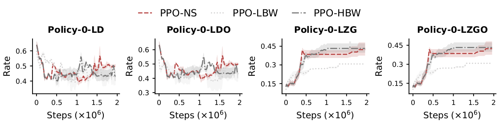
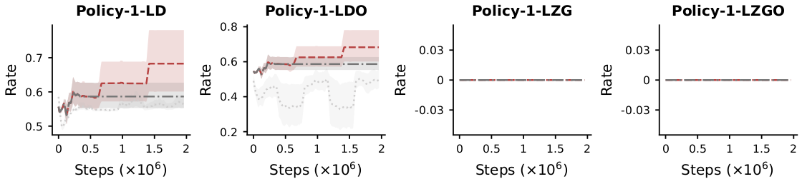
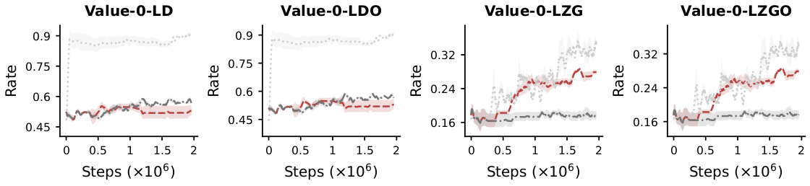
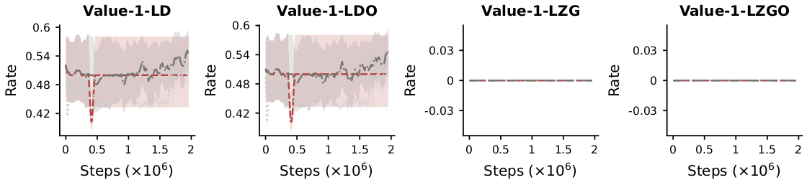
Neuron-activity audits across both policy and value networks (dormant ratio LD, dormancy persistence LDO, zero-gradient ratio LZG, zero-gradient persistence LZGO) show (i) the layer-average activation stays strictly positive under all training conditions — validating Assumption 3 (non-degeneracy); and (ii) the silent subspace dimension $d_{s,t}$ remains well below the full dimension $d$ at every observed step — the exact condition that makes Theorem 3's bound strictly tighter than the full-dimension bound.
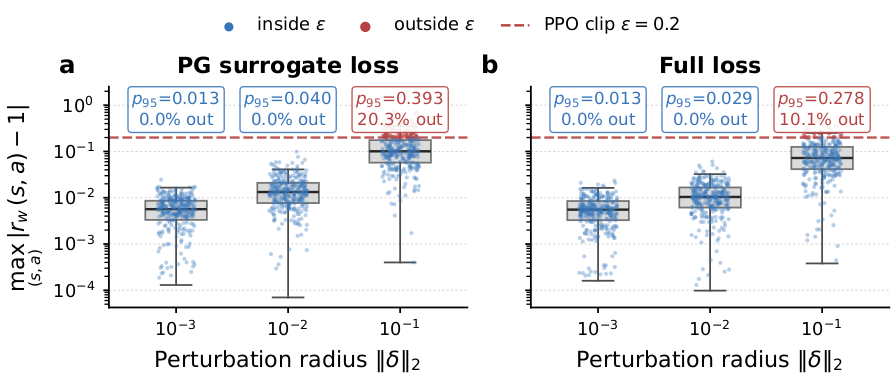
The curvature we report is measured where the algorithm actually operates. Sampled perturbation points fall almost entirely inside the PPO trust region across all tested perturbation radii, so the spectrum below describes the region the updates visit.
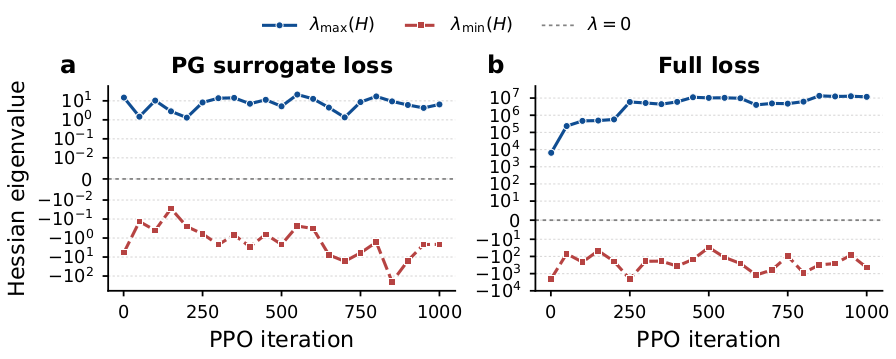
Lanczos estimates of the Hessian spectrum along PPO training show that the smallest eigenvalue $\lambda_{\min}(H)$ remains slightly negative — the objective is locally non-convex. At the same time, the spectrum is dominated by a few large positive eigenvalues, so the curvature is positive along the principal directions of the loss.
These measurements are reported as a description of the local geometry, not as evidence that (A5) holds. Extending the analysis to weaker local conditions consistent with the measured curvature is left to future work.
§5 · Experiments
The theory above makes four falsifiable claims. If Silent Neurons are the right unit of intervention, then (1) resetting them should restore adaptation exactly where plain PPO and output-only resets fail; (2) the QoE gains should co-move with a measurable reduction in dormancy — the mechanism, not just the outcome; (3) the advantage should be robust to the method's own knobs ($\delta_d,\delta_g$) and carry over to real traces and other architectures; and (4) it should survive contact with the strongest ABR baselines, not only with PPO variants. The experiments interrogate each claim in turn.
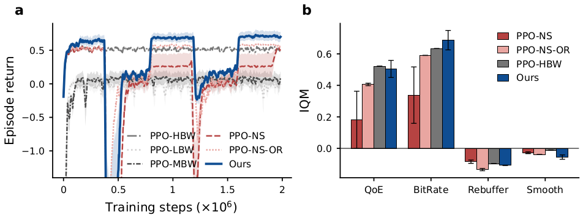
The comparison is deliberately stacked against ReSiN: alongside non-stationary PPO (PPO-NS) and output-based dormant resets (PPO-NS-OR), it includes three oracles that never face a distribution shift (PPO-HBW/LBW trained and evaluated on stationary high/low bandwidth, and the mixed-bandwidth PPO-MBW). (a) Whenever the bandwidth regime switches, PPO-NS drops and never recovers — the plasticity-loss signature from the Motivation section. ReSiN re-adapts after every switch and closes most of the gap to the oracles. (b) Under the interquartile mean over the whole training trajectory, ReSiN reaches an IQM QoE of 0.504 — 178% above PPO-NS (0.181) and 24% above PPO-NS-OR (0.406). PPO-HBW lands at a comparable 0.522 only because it runs under stationary high bandwidth and stays nearly flat, whereas ReSiN starts lower and improves steadily. Output-only resets (PPO-NS-OR) recover only part of this — consistent with Theorem 1's warning that forward evidence alone over- and under-resets.
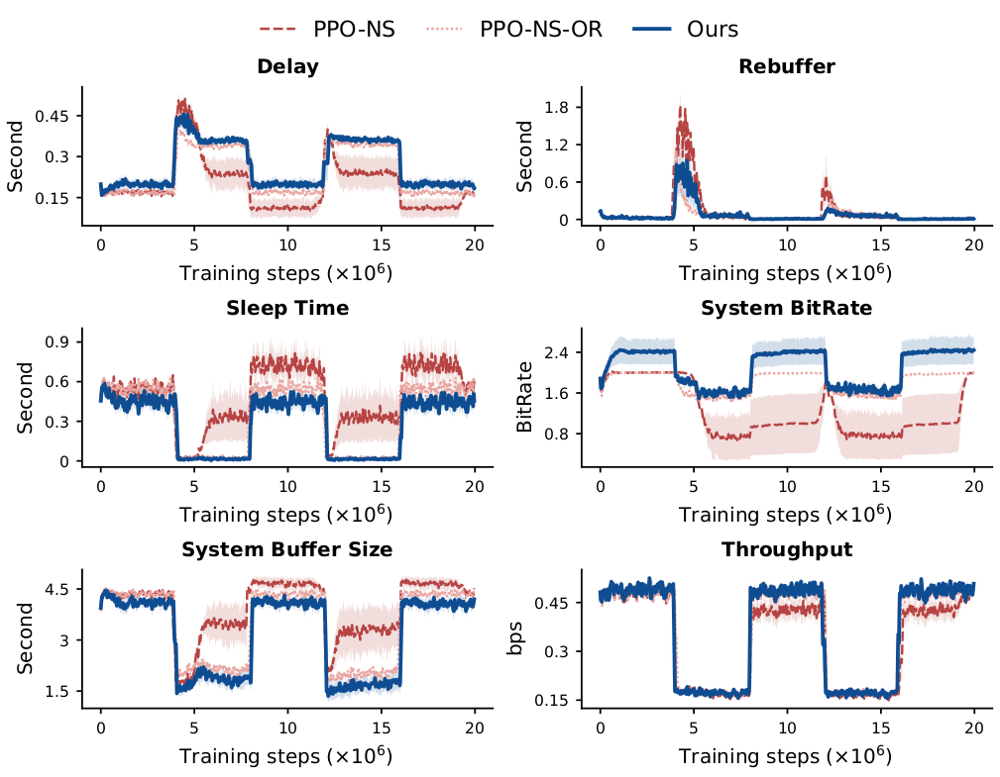
The gains are not a reward-hacking artifact: at the system level (sleep time, buffer occupancy, throughput), ReSiN keeps the streaming pipeline itself healthier than PPO-NS and output-based resets.
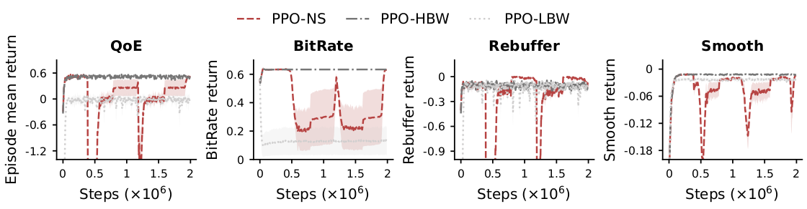
Decomposing QoE explains how: ReSiN selects bitrates more aggressively while holding rebuffering and smoothness steady — the behavior of an agent that can still explore, i.e., restored plasticity.
Better QoE alone would not establish that plasticity is the mechanism — the noise injection could simply act as extra exploration. The direct test is to watch the neurons:
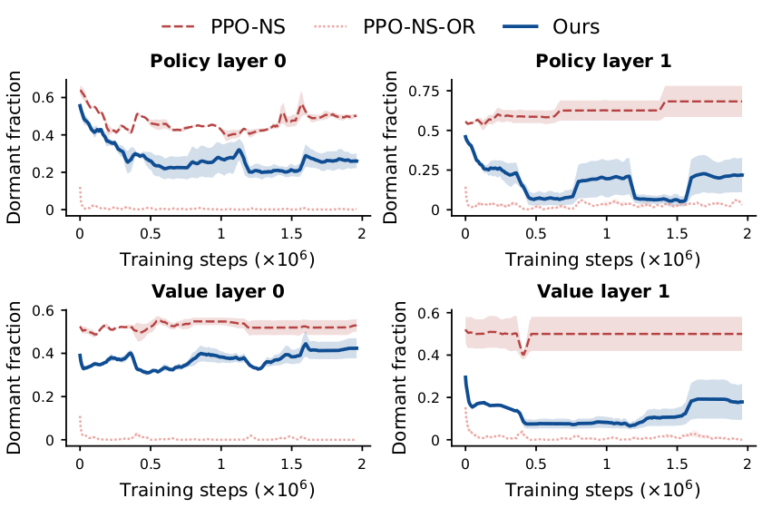
In every audited layer (policy/value, layers 0–1), ReSiN holds the dormant fraction at the lowest level precisely while its returns climb; in the baselines, dormancy ratchets upward and returns stagnate. The QoE gap and the dormancy gap rise and fall together — the co-movement Claim 2 requires.
ReSiN introduces exactly two hyperparameters — the forward and backward thresholds $\delta_d,\delta_g$ that define silence. A method that only works for a lucky threshold pair would be fragile in deployment, so the ablations sweep both, plus the learning rate:
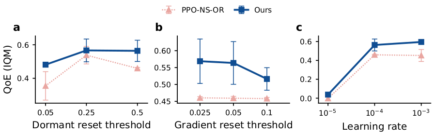
(a) dormant-reset threshold, (b) gradient-reset threshold, (c) learning rate: performance stays flat across a wide band of both thresholds — the intersection criterion, not a tuned constant, is doing the work.
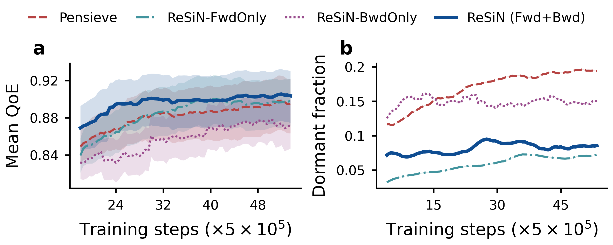
Beyond synthetic bandwidth: trained on real-world traces, the fwd+bwd criterion again keeps dormancy lowest (right) and converts it into QoE (left) — both halves of the Silent-Neuron definition are necessary. Over the full trajectory (seed 0): QoE 0.891 for Fwd+Bwd against 0.876 (Pensieve), 0.877 (FwdOnly) and 0.854 (BwdOnly), at a dormant fraction of 0.081 against 0.169, 0.058 and 0.148.
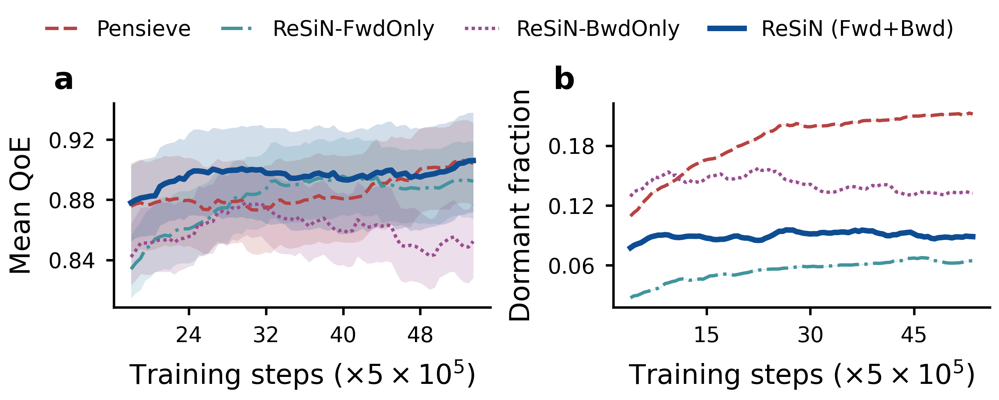
The same experiment under a second random seed (seed 1) reproduces the ordering — QoE 0.893 for Fwd+Bwd against 0.887, 0.873 and 0.854, with dormant fractions 0.089, 0.184, 0.055 and 0.141 — so the ablation is not an artifact of one seed.
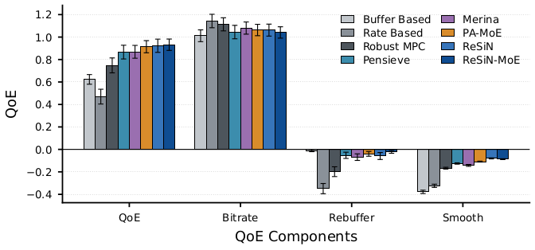
Beyond one network: swapping the backbone architecture preserves the ordering — the reset principle, not an architecture-specific trick, carries the advantage.
Finally, beating PPO variants is necessary but not sufficient — the practical question is whether plasticity preservation moves the needle against purpose-built ABR algorithms:
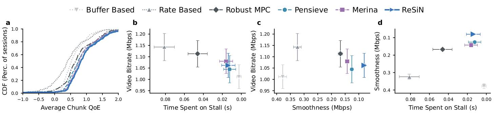
On held-out test traces, ReSiN outperforms both rule-based methods (BB, Rate, RobustMPC, BOLA) and learning-based ones (Pensieve, MERINA, PAMoE) on overall QoE and its bitrate/rebuffering components — including the meta-RL method MERINA, which is explicitly designed for fast adaptation.
To make those margins readable, we also compute an offline optimal ceiling: for every episode, the QoE-maximising bitrate sequence given full knowledge of that episode's bandwidth trace, solved exactly by a Bellman recursion over (chunk index, buffer occupancy discretised at 0.1 s, previous bitrate) in the same simulator. It is solved on exactly the episodes the agents faced, so the comparison is paired episode by episode — and because the solver sees the entire future, no causal policy can reach it.
| Method | QoE | Bitrate (Mbps) | Rebuffer (s) | Smoothness (Mbps) | Inference (ms) |
|---|---|---|---|---|---|
| Buffer-based | 0.623 ± 0.379 | 1.011 | 0.002 | 0.378 | 0.0026 |
| Rate-based | 0.470 ± 0.583 | 1.143 | 0.081 | 0.324 | 0.0089 |
| RobustMPC | 0.748 ± 0.587 | 1.113 | 0.046 | 0.167 | 0.1075 |
| Pensieve | 0.866 ± 0.541 | 1.044 | 0.012 | 0.126 | 0.2984 |
| MERINA | 0.869 ± 0.506 | 1.080 | 0.016 | 0.142 | 0.4118 |
| PA-MoE | 0.914 ± 0.478 | 1.063 | 0.009 | 0.109 | 0.8056 |
| ReSiN | 0.923 ± 0.520 | 1.062 | 0.014 | 0.080 | 0.3620 |
| ReSiN-MoE | 0.932 ± 0.446 | 1.041 | 0.005 | 0.087 | 0.9242 |
| Offline optimal upper bound | 1.105 ± 0.524 | 1.142 | 0.001 | 0.032 | — |
Two things follow. First, the ceiling puts the margins in perspective: ReSiN reaches 0.923 against Pensieve's 0.866 with 1.105 attainable, so the remaining headroom is real but the ordering among methods is not noise. Second, the cost of getting there is negligible — a bitrate decision takes 0.362 ms against Pensieve's 0.298 ms on the same CPU, five orders of magnitude below the 4 s chunk duration, so it never delays a chunk request.
@article{he2025silent,
author = {He, Zhiqiang and Liu, Zhi},
title = {Silent Neuron Theory and Plasticity Preservation for Deep
Reinforcement Learning in Adaptive Video Streaming},
journal = {arXiv preprint arXiv:2505.01584},
year = {2025},
url = {https://arxiv.org/abs/2505.01584},
}